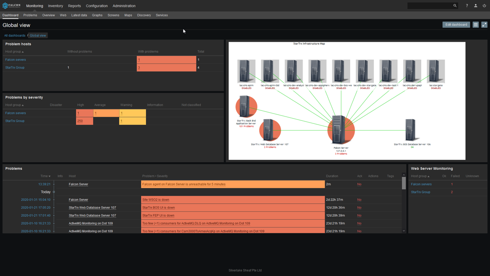

ARION MITIGATES WORRIES ON DOWNTIMES
ENTERPRISE MONITORING AND DASHBOARD SYSTEM FACILITY FOR ARION IS PROVIDED BY SILVERLAKE FALCON
“Secure, Transparent, Uninterrupted – there is no reason why one cannot work outside the physical enterprise”
Falcon is a powerful and affordable enterprise-level real-time monitoring system to gather and analyze events from servers, virtual machines, cloud and network devices enabling the user to quickly detect, diagnose, and resolve problems and service outages.
Falcon offers its users the perfect balance of simplicity and depth. Being able to monitor your enterprise network is all dependent on your perspective.
Falcon technology delivers a comprehensive view of the connected network (including all your digital assets) which is critical especially when you are working out-of-office.
• Speed troubleshooting, increase service levels, and reduce downtime
• Improve the quality of services and reduce operating costs by avoiding downtime
• Monitor resource usage trends and plan capacity increase in a timely manner
• Modular and highly scalable
• Monitor performance and availability of networks, applications and cloud resources
• Send notifications or execute remote commands in case of current or potential problems
• Rich visualization capabilities, customizable dashboard, custom graphs and network maps
• Provide distributed monitoring options
• Improve operational efficiency with out-of-the-box dashboards, alerts, and reports
Falcon Server is a perpetual subsystem of ARION platform that performs monitoring, interacts with Falcon agents, calculates triggers, sends notifications and acts as a central repository of events/data.
The server is the central repository in which all configuration, statistical and operational data is stored, and it is the entity in Falcon that will actively alert administrators when problems arise in any of the ARION monitored sub-systems.
Falcon Agent is native software module deployed on monitoring target digital assets to actively monitor local resources and applications (storage drives, memory, processor statistics, network, file systems, etc.).
The agent gathers operational information locally and reports data to Falcon server for further processing. Falcon agents are extremely efficient because of use of native system calls for gathering information.